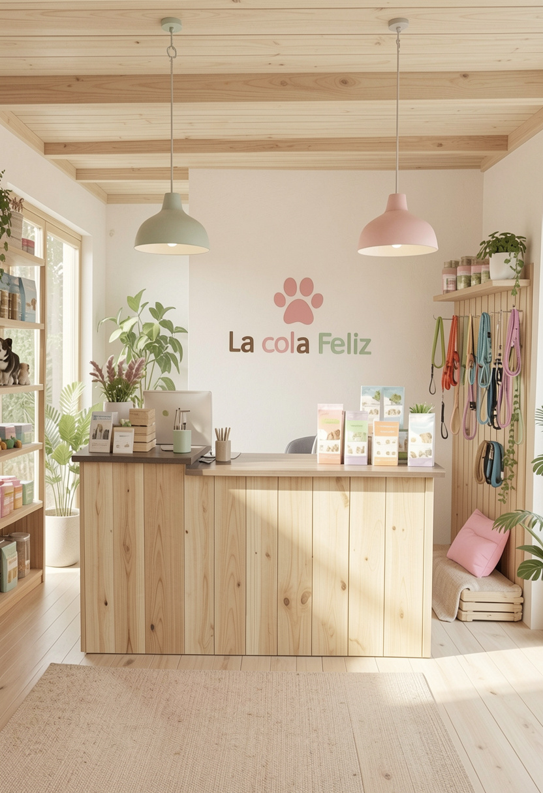
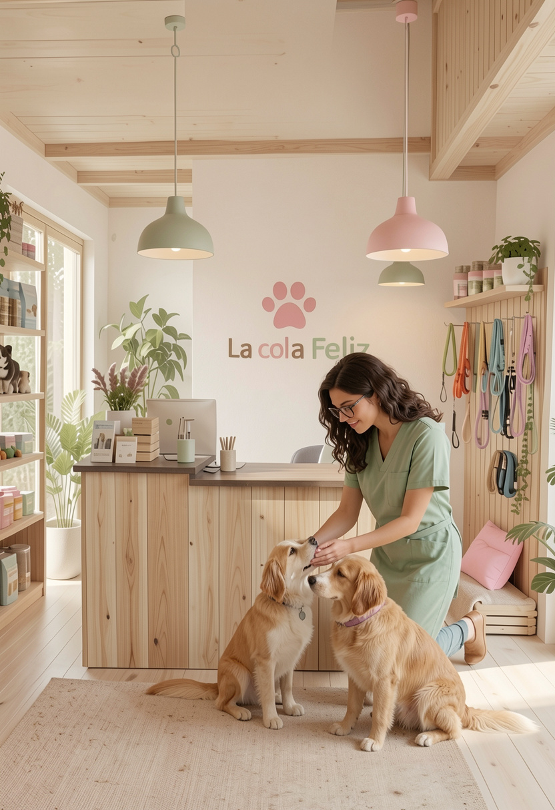

Nuestra Tienda Online
En La Cola Feliz creemos que el cuidado de una mascota no termina cuando sale de nuestras instalaciones. Forma parte del día a día, de los pequeños gestos, de las decisiones que tomamos en casa y de los productos que elegimos para su bienestar.
Por eso, además de nuestros servicios presenciales, llevamos tiempo trabajando en un espacio donde poder compartir todo ese conocimiento y trasladarlo también a tu hogar.
Próximamente disponible
Muy pronto podrás acceder a nuestra tienda online.
Un espacio pensado para que encuentres, de forma sencilla y con total confianza, productos seleccionados por nuestro equipo, basados en la experiencia real de nuestro día a día en el centro.
Selección basada en la experiencia
Actualmente, todos los productos que utilizamos en nuestras instalaciones —desde la alimentación hasta los artículos de higiene o los materiales de adiestramiento— han sido previamente probados y elegidos con un único criterio: el bienestar de los animales.
Esa misma selección será la que estará disponible en nuestra tienda online.
Porque no se trata de ofrecer cualquier producto, sino de ofrecer aquello en lo que realmente confiamos.
¿Qué podrás encontrar?
- Alimentación natural y especializada.
- Accesorios para el día a día.
- Juguetes seguros y adaptados.
- Productos de salud e higiene.
- Artículos recomendados por veterinarios.
- Complementos para eduación y adiestramiento.
Mucho más que una tienda
Además, este espacio no será solo una tienda.
También será un lugar donde compartir recomendaciones, consejos y recursos útiles para ayudarte a cuidar mejor de tu mascota, siempre desde un enfoque responsable y cercano.
Queremos que, incluso desde casa, sigas sintiendo la tranquilidad de saber que estás eligiendo lo mejor para ellos.
La misma confianza, también en casa
Muy pronto podrás comprar cómodamente desde casa y recibir todo lo que necesitas con la misma confianza que ofrecemos en nuestras instalaciones.
Estamos trabajando para que este nuevo espacio refleje todo lo que somos: cercanía, cuidado y compromiso.
Matente informado
Suscríbete a nuestra newsletter y sé de los primeros en descubrir la apertura, con acceso a novedades y condiciones especiales de lanzamiento.